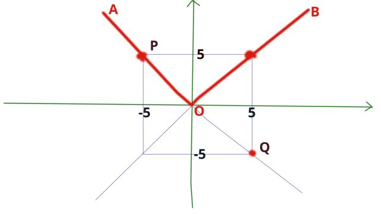
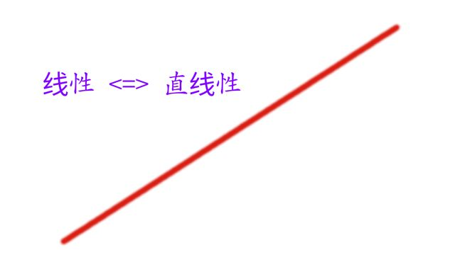
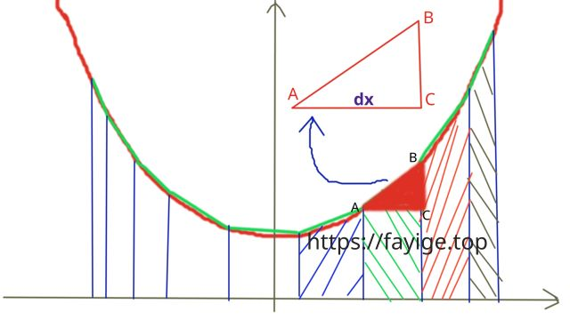
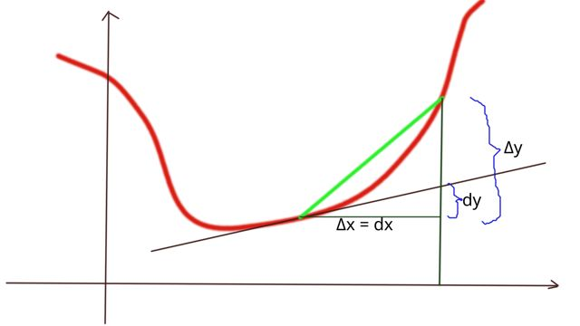

经常听到说微积分具有线性性，那么
为什么微分（导数）和积分具有线性性？微积分的线性性从何而来？
本文一步一步的解析为什么。
数学上的线性空间的定义有八条.
若 V 是一个非空集合，P 是一个数域，
\begin{align} & \text{(1)}\quad \alpha + \beta = \beta + \alpha;\quad \forall \alpha, \beta \in V \quad\quad \text{- 这一条叫做加法交换律} &\\& \text{(2)}\quad (\alpha + \beta) + \gamma = \alpha + (\beta + \gamma);\quad \forall \alpha,\beta,\gamma \in V \quad\quad \text{- 这一条叫做加法结合律} &\\& \text{(3)}\quad \exists 0 \in V, \quad st. \quad \alpha + 0 = \alpha; \quad \forall \alpha \in V \quad\quad \text{- 定义零元素} &\\& \text{(4)}\quad \forall \alpha \in V, \exists \beta \in V, \quad st. \quad \alpha + \beta = 0 \quad\quad \text{- 存在反元素，需要用到第(3)条定义的零元素} &\\& \text{(5)}\quad 1 \alpha = \alpha;\quad \forall \alpha \in V; 1 \in P \quad\quad \text{乘1不变性} &\\& \text{(6)}\quad k(l\alpha) = (kl)\alpha;\quad \forall k,l \in P; \forall \alpha \in V \quad\quad \text{满足数乘的结合律} &\\& \text{(7)}\quad (k+l)\alpha = k\alpha + l\alpha;\quad \forall k,l \in P; \forall \alpha \in V \quad\quad \text{满足数乘对于数域 P 的分配率} &\\& \text{(8)}\quad k(\alpha + \beta) = k\alpha + k\beta; \quad \forall k \in P; \forall \alpha \in V \quad\quad \text{满足数乘对于集合 V 的分配率} & \end{align}
那么就称集合 V 是数域 P 上的一个线性空间。
向量空间：线性空间也叫向量空间，线性空间跟向量空间是一个东西，只是从两个不同的视角看问题而已。如果从向量空间的角度看，线性空间中的每一个元素也被叫做向量。
线性空间有这么8条定义，是否感觉它们很反常态，看的眼花缭乱？
其实，
它们的核心只有两条：
其余的，都是在定义，在这个线性空间上，什么是加法，什么是数乘。
加法封闭，简言之，就是空间中的任意两个元素可以相加，且结果依然属于这个空间，而没有跑到这个空间的外边去。比如：一个不含0的整数的集合V，中取两个元素：-1, 1， 相加得 0, 前提说了不含0, 所以这个集合不满足加法封闭性。
数乘封闭性，简言之，就是空间中的任意一个元素可以乘以一个数，且结果依然属于这个空间，而没有跑到这个空间的外边去。
看到线，我想大多数人想到的是，画一条线，直线、弯线、平面中的线、3D立体中的线、或者生活中的线、毛线、电线、网线，显然，我们的经验告诉我们，这才是线！
让我们在平面直角坐标系中画出一条折线: AOB ，其中左半段 AO 可以用 y = -x 表示，右半段 OB 可以用 y = x 表示。
如图所示：

(注意，(0, 0) 既在 AO 上，也在 OB 上，总的来说 (0, 0) 在 AOB 上。)
我们在 AO 段取一个点 P(-5, 5)，再将 P 乘以一个实数集数域 P 中的一个数 -1, 我们就得到了点 Q(5, -5)，
现在我们看到，Q 既不属于左段 AO，也不属于右段 OB，于是我们可以说 Q 不属于折线 AOB，也就是说点 Q 不属于上面定义的空间 V ！
于是得出结论，上面那个定义的空间 V 不满足线性空间的定义，所以 V 不是线性空间！
还可以举出很多的图像的例子，比如抛物线、圆、三角函数的图像，它们都不满足线性空间，但是，直线一定满足线性空间。
于是，我们找到了线性空间定义的本质：那就是，一条完美的直线！
线性就是直线性、直线性就是线性！ 
顺便吐槽下线性这个词的中文翻译，在英文里，线性对应的单词是 linear, line 是直线，curve 是曲线，line 跟 curve 在词跟上可没有相同的部分啊，可是在汉语里，我们把直线、曲线、各种各样的线全都可以用一个字表达：线。从 linear 到线性，这个翻译不知道造成我们在理解数学问题上的多大的困扰和障碍，非得用很多的证明过程才明白，当然我没有否认严谨的证明在数学上的地位，而是说这个翻译太具有误导性了，所以 linear 应该翻译成直性，不要觉得直性很别扭，别扭只是固有的习惯。
假如一开始，第一次听人这么说，微积分具有线性性，是否觉得很茫然？这到底是个啥意思？既没法立马否定，也没法立马肯定。
认识微积分的线性性，可以分很多层，逐层理解，这是第一层。
先来看微积分满足线性性的公式吧：
噫 --- 嘶 --- ! 公式还真满足，没毛病，
可是，等等，
我左思右想，这也太反直觉了吧！
首先微积分研究的是各种奇形怪状的曲线，比如抛物线、圆、双曲线，。。他们大多数都不是直线 ...
而前文已经得出了结论：线性就是直线性！
到了这里，公式的得出了线性性，我们的微积分直觉却告诉我们，微积分可不是直线性的！
那么问题出在哪呢？
(在 dx 的尺度下，AB 就是直线(微元))
dx 是个无穷小量，它到底有多小？那就是比你认为的小还要小，无穷小量不是一个极小的常数，它是一个极小的过程的描述。
在无穷小量 dx 的尺度上，每个小分块，就可以看作是一个小长方形，此时，长方形的顶端不再是曲线，而是直线，可以直接用长方形的宽度 dx 乘以它的高度 f(x) 来计算它的面积，得 f(x) dx，最后将所有的面积微元相加，即得总面积。
$$\lim_{\Delta{x}\rightarrow 0}\sum{f(x) \Delta{x}} = \int f(x) dx$$
无穷小量 dx 的视角下，近似就不再是近似，而是质的改变，任意弯曲的曲线不再是曲线，而是在这个微观上的直线微元。
而不论是 2dx, 3dx, 4dx, ndx, ..., 只要这个 n 是常数，它们连在一起依然是直线（微元），每一个微观局部都具有线性性，当 $$n\rightarrow \infty$$, 又从微观到了宏观。
这也就是积分的线性性的几何意义。
导数可以看作曲线过某一点的斜率
导数的极限定义：
画出图像说明：

当 $$\Delta{x} \rightarrow 0$$ 时，
\begin{align} & \Delta{x} \rightarrow 0,\quad\quad \Delta{x} = dx, \quad\quad\quad \Delta{y} = f(x+\Delta{x}) - f(x),\quad \Delta{y} \rightarrow dy, &\\\\& \text{导数} f'(x) = \frac{dy}{dx} = \lim_{\Delta{x} \rightarrow 0}\frac{\Delta{y}}{\Delta{x}} = \lim_{\Delta{x} \rightarrow 0}\frac{f(x+\Delta{x})-f(x)}{\Delta{x}} & \end{align}
\begin{align} & \text{在} \Delta{x} \rightarrow 0, \text{即 dx 这个无穷小量尺度上，} &\\& \text{函数值的增量}\Delta{y} \rightarrow dy \text{ 与 dx 的比值呈线性关系，这一小段弧近似看作直线，} &\\& \text{由于 dx 是无穷小量，近似就是质的改变，在微观上就是线性。} & \end{align}
\begin{align} & \text{对于任意一个函数 f(x), 并不一定是线性函数，其图像有可能是曲线，} &\\& \text{函数值的增量 f(x+t) - f(x) 与自变量的增量 (x+t) -x = t 的比值不一定是线性关系，} &\\& \text{但是当 } t \rightarrow \text{时, 它们一定会呈线性关系。} & \end{align}